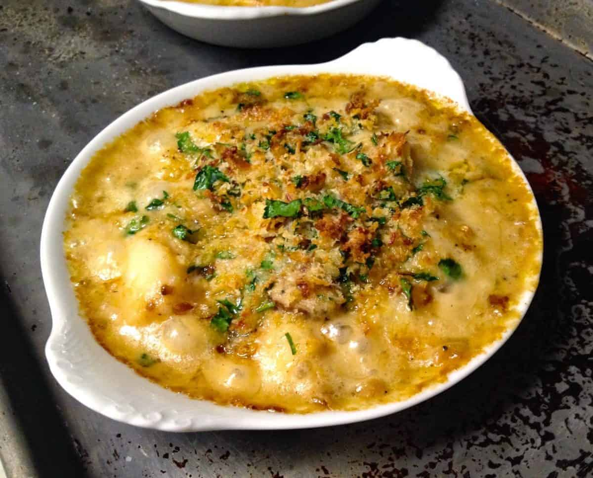

Coquilles Saint-Jacques

Description
Coquilles Saint-Jacques are yet another classic french dish. Usually served as an appetizer around Christmastime, this scallop dish is always a fan favorite.
Ingredients
- 8 tablespoons unsalted butter, divided
- 1/4 cup all-purpose flour
- 1 1/2 cups seafood stock
- 1 cup heavy cream
- 1/4 teaspoon curry powder
- Kosher salt and freshly ground black pepper, to taste
- 3 large shallots, peeled and diced, approximately 1 cup
- 12 ounces cremini mushrooms, cleaned, stems discarded, sliced
- 1/4 cup brandy or Cognac
- 1 1/2 cups fresh bread crumbs
- 1/4 cup minced flat-leaf parsley
- 3 ounces Gruyère cheese, grated
- 1/4 cup extra-virgin olive oil
- 2 pounds bay scallops
Steps
- Set a saucepan over medium heat, and melt 4 tablespoons of the butter in it. When it foams, add the flour, and cook for approximately 4 minutes, whisking constantly. Add the stock, and whisk again, until it is smooth and thick. Add the cream, curry powder, 1 1/2 teaspoons salt and 1/2 teaspoon pepper. Bring the sauce just to a boil, then lower heat and simmer for approximately 10 minutes, stirring occasionally. Set aside.
- Put 3 tablespoons butter in a large sauté pan set over medium heat. When it melts and foams, add the shallots, and cook, stirring occasionally, until they are clear and tender, approximately 5 minutes. Add the sliced mushroom caps, and cook for 8 to 10 minutes, until they have released their liquid and are just starting to brown. Add the brandy or Cognac, and cook for 1 to 2 minutes, until the alcohol has mostly evaporated. Add a teaspoon of salt to the mixture and 1/2 teaspoon of pepper, and stir again to combine. Add mushroom mixture to the cream sauce, and set aside.
- Combine the bread crumbs, parsley and Gruyère in a large bowl, stir to combine, then moisten the mixture with the olive oil, stirring again to combine.
- Use last tablespoon of butter to grease 6 1 1/2-cup gratin dishes. Divide the scallops evenly among them and top with equal amounts of the cream and mushroom sauce. Top each gratin dish with a handful or two of the bread-crumb mixture. Place dishes on a sheet tray, cover gently with foil or plastic wrap and store in the refrigerator for up to a day.
- When ready to cook, preheat the oven to 400. Remove cover from sheet tray, and place in the oven for approximately 20 minutes, or until the tops are lightly browned and bubbling and the scallops are cooked through.